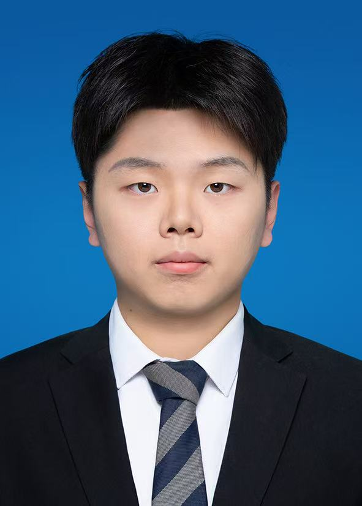

Welcome to my first webpage!
我叫蔡辉，现就读于华侨大学，是2022级智能制造工程专业的一名学生。我来自江苏镇江，非常荣幸能在这里与大家相遇。 我的性格动静结合。一方面，我对智能制造这个充满前沿科技的专业充满热情，享受逻辑思考与动手创造的过程；另一方面，我的生活也离不开音乐的陪伴。我从小学开始学习萨克斯，它不仅是我的特长，更是我放松心情、表达情感的最好方式。音乐教会了我坚持与专注，也让我在团队合奏中懂得了协作的重要性。我相信，理性工程与感性艺术的结合，能碰撞出不一样的火花。
2025年中国大学生机械创新创意大赛智能制造赛全国二等奖